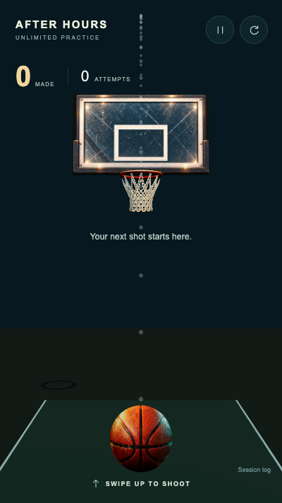
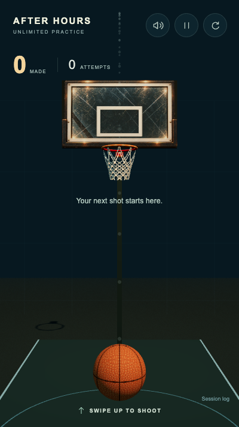
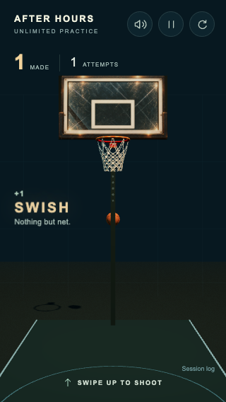
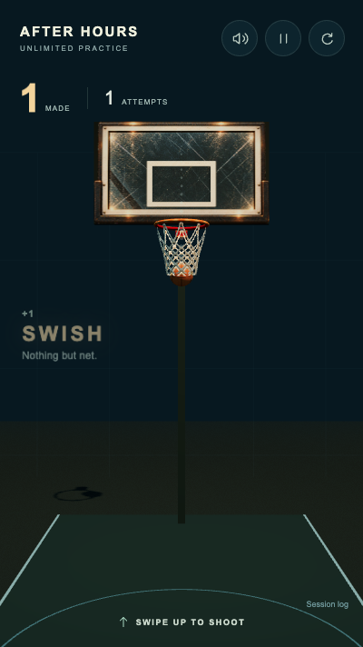
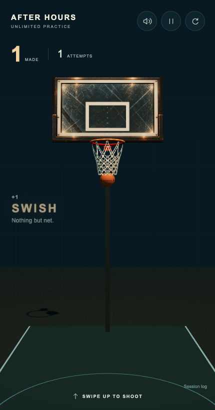

AFTER HOURS · 409732c baseline → integration passA more coherent night court.
The same real shot physics, with reconstructed source-art materials, earlier net contact, restrained rewards and smaller image downloads. No score or ball transforms were injected in these recordings.
Ready · 400 × 712
Before · recorded at starting HEAD
After · same camera and ball size
Portrait checks
320 × 568
400 × 712
430 × 820
Actual touch recordings · with captured game audio
Play to hear the current synthesis. These are full-viewport screenshot recordings paced by wall time at 25 fps; repeated frames preserve elapsed time where capture is slower. They are not a phone FPS measurement. Reward frames below/above are phase examples, not pixel-aligned timing comparisons.
What stayed the same
Across these three cases, accepted launch velocities, outcomes and 138 matching physical positions are identical to the preserved baseline. Ball radius 0.12m, inner rim radius 0.232m, tube radius 0.017m; launch forgiveness, spin and scoring remain unchanged.
Physical comparison · Implementation, limits and phone playtest